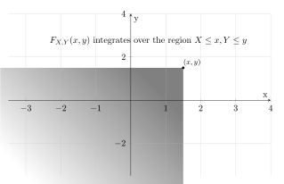
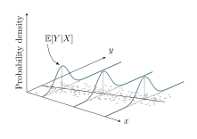
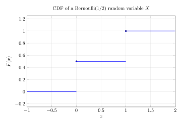

Week 6
Recap
Marginal and Conditional pdfs
If \((X,Y)\) is continuous, then \(X\) and \(Y\) are continuous random variables and their marginal pfs are just their pdfs as random variables.
Marginal pdfs can be expressed in terms of the joint pdf:
\[ f_X(x) = p(x) = \int p(x,y) dy \]
\[ f_Y(y) = p(y) = \int p(x,y) dx \]
This is similar to the discrete case, but with integrals.
For \(y\) such that \(p(y) > 0\), the conditional pdf of \(X\) given \(Y\) is defined as:
\[ f_{X|Y} (x | y) = p(x|y) = \frac{p(x,y)}{p(y)}. \]
Likewise, for \(x\) such that \(p(x) > 0\),
\[ f_{Y|X}(y|x) = p(y|x) = \frac{p(x,y)}{p(x)}. \]
Thus, technically the conditional pdf is only defined when the marginal pdf is \(>0.\)
Recall that \(f(y) \neq P(Y=y)\) because if \(Y\) is a continuous random variable, the probability \(Y\) takes on a particular value is vanishing (0). During our lectures and notes we might write that \(p(x|y) = p(x|Y=y)\) but we don’t mean this literally. For now, we can think about it as “like” conditioning on \(p(y)\) but it’s quite a bit more subtle mathematically and requires a measure-theoretic treatment that we won’t get into in this course.
Dependence and Independence
Random variables \(X_1, …, X_n\) are independent if
\[ P(X_1 \in A_1, ..., X_n \in A_n) = P(X_1 \in A_1) \cdots P(X_n \in A_n) \]
for all (measurable) subsets \(A_1, …, A_n \subset \mathbb R\).
Intuitively, independence captures the idea that \(X_1, …, X_n\) contain no information about one another.
In terms of the pdf/pmf, \(X_1, …, X_n\) are independent if
\[ f(x_1, ..., x_d) = f_{X_1}(x_1) \cdots f_{X_n}(x_d) \]
for all \(x_1, …, x_d\).
This isn’t strictly an if-and-only-if statement. For pdfs, we won’t always be able to factor the pdf doesn’t mean that \(X_1, …, X_n\) are independent.
Recall that pdfs are not unique. We can modify them on measure zero sets to come up with a different pdf that describes the same random variable. There may be some pdfs for independent variables that do not factor, but there should be some expression of these variables that does factor. This makes this a relatively unimportant, though subtle, point.
Let \(X, Y \sim \text{Uniform}(0,1)\) be independent. Then we have that
\[f(x,y) = \mathbb 1(0 < x,y< 1)\]
\[ f(x) = \mathbb 1(0 < x < 1) \]
\[ f(y) = \mathbb 1(0 < y < 1) \]
\[ \tilde{f}(x) = \mathbb 1(0 < x < 1) + \underline{\mathbb 1 \left(x = \frac{1}{2}\right)} \]
The underlined part adds nothing to the pdf since it occurs with measure zero. We couldn’t necessarily factor \(f(x,y) = \tilde{f}(x) f(y)\).
The opposite of the statement above would require an additional caveat of “if there exists \(f_{X_1}, … f_{X_d}\).”
Monty Hall Example
What would the joint distribution be if \(X\) and \(Y\) had the same marginal distributions as before, but they were independent?
Independence requires \(p(x,y) = p(x)p(y)\) for all \(x,y\). Therefore:
| Monty opens #1 | Monty opens #2 | Monty opens #3 | |
|---|---|---|---|
| Car is behind 1 | 0 | 1/6 | 1/6 |
| Car is behind 2 | 0 | 1/6 | 1/6 |
| Car is behind 3 | 0 | 1/6 | 1/6 |
The joint-pdf or joint-pmf should look like a concept from linear algebra: an outer product of the probabilities at each realizable value.
If we look at a heatmap of the joint pmf of random variables \(x,y\), we would expect to see striation in a heatmap of independent probabilities.
Joint CDFs
The joint cdf of a random vector \((X_1, …, X_d)\) is
\[ F(x_1, ..., x_d) = P(X_1 \leq x_1, ..., X_d \leq x_d). \]
For instance, in the bivariate case, the joint cdf of \((X,Y)\) is
\[ F(x,y) = P(X \leq x, Y \leq y). \]

Properties of independent random variables
\(X\) and \(Y\) are independent if and only if for all (measurable) functions \(g(x)\) and \(h(y)\),
\[ \mathbb E(g(X)h(Y)) = (\mathbb Eg(X))(\mathbb Eh(Y)). \]
Proof:
First we’ll look at the forward direction:
Let’s consider the case where we define \(g(x)\) and \(h(x)\) such that it applies in the setting of:
\[ P(X \in A, Y \in B) = P(X \in A)P(Y \in B). \]
In other words, we’re considering \(g(x) = \mathbb 1(x \in A)\) and \(h(y) = \mathbb 1(y \in B)\).
It’s useful to recall that the probability of any event is equal to the probability of the indicator of that event.
Thus
\[ P(X \in A, Y \in B) \text{ becomes } \mathbb E(\mathbb 1(X \in A, Y \in B)). \]
One may want to recall and apply an earlier definition for probability of events to see that :
\[ P(X \in A, Y \in B) \stackrel{def}{=} P(\{ s \in S \colon X(s) \in A, Y(s) \in B \}). \]
Which we can rewrite:
\[ = \mathbb E(\mathbb 1(X \in A) \mathbb 1(Y \in B)) = (\mathbb E(\mathbb 1(X \in A)) (\mathbb E (\mathbb 1(Y \in B))). \]
\[ = P(X \in A) P(Y \in B) \]
Now for the other direction.
Assume that \(X,Y\) are independent: do we get that \(f(x,y) = f(x) f(y)\).
\[ \underbrace{\mathbb E g(X) h(Y)}_{=\int g(x) h(y) f(x,y) dxdy} \stackrel{?}{=} (\mathbb E g(X)) (\mathbb E h(Y)) \]
\[ =\int g(x) h(y) f(x) f(y) dx dy \]
\[ = \int \left( \int g(x) f(x) dx \right) h(y) f(y) dy \]
\[ = \left( \int g(x) f(x) dx \right) \left( \int h(y) f(y) dy \right) \]
\[ = \left( \mathbb E g(X) \right) \left( \mathbb E h(Y) \right). \]
If \(X\) and \(Y\) are independent, then
\[ \text{Var}(X + Y) = \text{Var}(X) + \text{Var}(Y). \]
If \(X\) and \(Y\) are independent then
\[ M_{X+Y}(t) = M_X(t) M_Y(t). \]
We can see that this would be the case from the fact that we can apply the statement above (\(\mathbb E (g(X) h(Y)) = \mathbb E (g(X)) \mathbb E (h(Y))\)).
\[ M_{X+Y}(t) = \mathbb E \exp (t(X+Y)) = \mathbb E \exp(tX) \exp (tY) = \mathbb E \exp (tX) \mathbb E (tY) = M_X(t) M_Y(t). \]
A useful observation is how this applies in the setting of the fact that a random variable \(X\) is not independent of itself. If it were, then we’d have that \(\text{Var}(2X) = \text{Var}(X+X) = \text{Var}(X) + \text{Var}(X) = 2 \text{Var}(X)\), but instead we have that \(\text{Var}(2X) = 4\text{Var}(X)\).
Recall that the variance of dependent random variables is
\[\text{Var}(X+Y) = \text{Var}(X) + \text{Var}(Y) + 2\text{Cov}(X,Y).\]
This property of mgfs can simplify derivations of the distribution of a sum of independent random variables.
The mgf of \(X \sim \mathcal N(\mu, \sigma^2)\) is
\[ M_X(t) = \exp(\mu t + \frac{1}{s} \sigma^2 t^2). \]
Suppose \(X_1 \sim \mathcal N(\mu_1, \sigma^2_1)\) and \(X_2 \sim \mathcal N(\mu_2, \sigma^2_2)\) independently. Then
\[ M_{X_1 + X_2}(t) = M_{X_1}(t)M_{X_2}(t) \]
\[ =\exp\left( (\mu_1 + \mu_2) t + \frac{1}{2}(\sigma_1^2 + \sigma^2_2) t^2\right), \]
which is the mgf of \(\mathcal N(\mu_1 + \mu_2, \sigma^2_1 + \sigma^2_2)\) for all \(t\).
Therefore
\[ X_1 + X_2 \sim \mathcal N(\mu_1 + \mu_2, \sigma^2_1 + \sigma^2_2). \]
Recall that if two variables have the mgfs that are equal and finite around some interval of the origin, then they are the variables are equal in distribution. (It turns out that if two mgfs are finite and equal on a neighborhood around zero, they must be equal everywhere).
Therefore we’re allowed to make the jump that \[ Y \sim \mathcal N(\mu_1 + \mu_2, \sigma_1^2 + \sigma_2^2) \Rightarrow X_1 + X_2 \stackrel{d}{=} Y. \]
Conditional Expectations
Suppose \((X,Y)\) is a random vector and \(g(x)\) is a measurable function. The conditional expectation of \(g(X)\) given that \(Y = y\) is
\[ \mathbb E(g(X) | Y = y) = \sum_{x \in \mathcal X} g(x) f_{X|Y} (x|y) \]
in the discrete case and \[ \mathbb E(g(X) | Y=y) = \int g(x) f_{X|Y} (x|y) dx \]
in the continuous case.
Often we abbreviate $\(\mathbb E (g(X) | Y = y)\) as \(\mathbb E(g(X)|y)\).
As before \(\mathbb{E}(g(X)|y)\) is defined as long as \(f(y) \neq 0\).
Caveats, Interpretation
When \(Y\) is a discrete r.v. the conditional expectation is equivalent to conditioning on \(Y=y\) as the notation suggests. However, if \(Y\) is a continuous random variable, the interpretation is much more subtle since it requires measure theoretic considerations.
Conditional Distributions
Suppose \((X,Y)\) is a random vector.
The conditional distribution of \(X\) given that \(Y= y\) is the probability measure \(Q\) such that
\[ Q(A) = \mathbb{E}\left( \mathbb 1 (X \in A) \mid Y = y \right) \]
for all measurable sets \(A\).
The conditional expectation \(\mathbb{E}(g(X) | Y = y)\) can be thought of as the expected value of \(g(X)\) under the conditional distribution of \(X\) given \(Y = y\).
That is \[ \mathbb{E}(g(X) | Y = y) = \mathbb{E}g(\tilde{X}) \text{ where } \tilde{X} \sim Q. \]
This is a very useful way to think of conditional expectations.
Basic Properties
In particular,
- \(\mathbb{E}cg(X) | y) = c \mathbb{E}(g(X) | y)\) for any \(c \in \mathbb{R}\).
- \(\mathbb{E}(g(X) + h(X) | y) = \mathbb{E}(g(X) | y) + \mathbb{E}(h(X)|y)\)
- \(g(x) \leq h(x) \to \mathbb{E}(g(X) | y) \leq \mathbb{E}(h(X)|y)\).
Conditional expectations as random variables
It’s often useful to leave the condition as a random variable.
Consider the function \(h(y) = \mathbb{E}(X|Y = y)\). Then \(h(Y)\) is a random variable, denoted \(\mathbb{E}(X|Y)\).
A key property of conditional expectations is that
\[ \mathbb{E}(g(Y) X | Y) = g(Y) \mathbb{E}(X|Y) \]
The basic idea here is that if we were to condition on a particular value of \(Y\), then \(g(Y)\) would just be constant on the left-hand-side of the expectation.
Law of Total Expectation & Law of Total Variance
Conditional expectations follow two very useful properties:
The law of total expectation
\[ \mathbb{E}X = \mathbb{E}(\mathbb{E}(X \mid Y))\]
And the law of total variance:
\[ \text{Var}X = \mathbb{E}( \text{Var}X \mid Y ) + \text{Var}( \mathbb{E}(X \mid Y ))\]
Exercise: Derive these two properties.
Note that \[ \mathbb{E}(\mathbb{E}(X \mid Y)) = \mathbb{E}\left(\sum x f_{X|Y} (x|y)\right) \]
\[ \mathbb{E}(\mathbb{E}(X \mid Y)) = \sum_{y \in \mathcal Y} \left(\sum_{x \in \mathcal X} x f_{X|Y} (x|y)\right) \cdot P(Y = y) \]
If I recall correctly, \(P(X|Y) = P(X,Y)/P(Y)\).
\[ \mathbb{E}(\mathbb{E}(X \mid Y)) = \sum_{y \in \mathcal Y} \left(\sum_{x \in \mathcal X} x P(X = x, Y = y)\right) \]
Interchange ordering of summation:
\[ \mathbb{E}(\mathbb{E}(X \mid Y)) = \sum_{x \in \mathcal X} \left(\sum_{y \in \mathcal Y} x P(X = x, Y = y)\right) \]
Pull out the \(x\) from the inner sum:
\[ \mathbb{E}(\mathbb{E}(X \mid Y)) = \sum_{x \in \mathcal X} x \left(\sum_{y \in \mathcal Y} P(X = x, Y = y)\right) \]
\[ \mathbb{E}(\mathbb{E}(X \mid Y)) = \sum_{x \in \mathcal X} \left( x P(X = x) \right) \]
\[ \mathbb{E}(\mathbb{E}(X \mid Y)) = \mathbb{E}X \]
Is there a way to apply
\[ \text{Var}X = \mathbb{E}X^2 - (\mathbb{E}X)^2 \quad ? \]
\[ \text{Var}X = \mathbb{E}X^2 - (\mathbb{E}(\mathbb{E}(X \mid Y)))^2 \]
Answers. Recall our definition:
\[ \mathbb{E}(X \mid Y) = h(Y) \quad \text{where} \quad h(y) = \mathbb{E}(X | Y = y). \]
Insert them into the problem stem:
\[ \begin{aligned} \mathbb{E}( \mathbb{E}(X \mid Y)) & = \mathbb{E}h(Y) = \sum_{y} h(y) p(y) \\ & = \sum_y \mathbb{E}(X \mid Y = y) p(y) = \sum_y \sum_x x p(x \mid y) p(y) \\ & = \sum_y \sum_x x p(x,y) = \sum_x x \sum_y p(x,y) \\ & = \sum_x x p(x) = \mathbb{E}X. \end{aligned} \]
Aside: How would one know what the expectation is with respect to in the outer expectations? The expectation is always with respect to whatever is random in the argument.
Aside #2: Isn’t the \(h(Y)\) notation a little bit confusing? What’s the intuition? Well, one can call \(h(Y)\) the “average value of \(X\) at a given level of \(Y\)”.
Maybe a more intuitive way to look at it is to think about the usual setting where we’re regressing \(Y\) on \(X\).

Review for the Midterm
Sigma Algebras
\(\mathcal B\) is a sigma algebra if:
- \(\varnothing \in \mathcal B\) (inclusion of the empty set)
- if \(A \in \mathcal B \longrightarrow A^c \in \mathcal B\) (closure under complements)
- if \(A_1, A_2, ... \in \mathcal B \longrightarrow \cup_{i=1}^\infty A_i \in \mathcal B\).
Consider the Borel sigma algebra:
If \((a,b) \in \mathcal B\), then \((a,b)^c = (-\infty, a] \cup [b, \infty) \in \mathcal B\).
Similarly, we could write \(\cup_{n=1}^\infty (a, n) = (a, \infty) \in \mathcal B\). Similarly, we could define the union on all of the complements of these sets to see that \((-\infty, a] \in \mathcal B\).
Every one of these sets is mapped to some value in \(\mathbb{R}\).
Inverse Probability Transform
Let \(F\) be any cdf. If \(U \sim \text{Uniform}(0,1)\), then \(F^{-1}(U)\) is a random variable with cdf \(F\).
The two transforms can be summarized as follows. Suppose \(U \sim \text{Uniform}(0,1)\) and \(X\) is a random variable with cdf \(F\). Then
- \(F^{-1}(U) \stackrel{d} = X\)
- \(F(X) \stackrel{d} = U\) if \(F\) is continuous, but not otherwise.
Consider Homework #3 question 1.
Suppose \(X\) is a random variable with pdf \(f(x) = bx^a \mathbb 1(0 < x < c)\) where \(a > 0, b > 0\) and \(c > 0\).
Thus
\[ \begin{aligned} u = F(x) & = \int_{-\infty}^x f(t) dt = \int_0^x b t^a \mathbb 1 (t < c) dt \\ & = b \frac{t^{a-1}}{a-1} \biggr \lvert_0^x = \frac{b x^{a-1}}{a-1}. \end{aligned} \]
So \(F^{-1}(u) = \left( \frac{u(a-1)}{b} \right)^{\frac{1}{a-1}}\).
And \(F^{-1}(U) \stackrel d = X\) where \(X\) has pdf \(f(x)\).
Do note that we can use the inverse probability transform to map to discrete random variables from the uniform distribution, but the probability integral transform (direction 2) doesn’t work because \(F\) won’t be continuous.
Consider \[X \sim \text{Bernoulli}(1/2)\]

The generalized inverse is given as \[F^{-1}(u) = \mathbb 1(u > 1/2)\]
\[ F^{-1}(U) \sim \text{Bernoulli}(1/2) \]
Location Scale Families
Generally the idea is that we start out with a standard pdf \(f(x)\) and we look at all the things we can get by scaling and shifting.
Recall and apply the probability transform formula:
\[Y = sX + m \quad m \in \mathbb{R}, s > 0 \]
\[f_Y(y) = f_X(g^{-1}(y)) \lvert \frac{d}{dy} g^{-1}(y) \rvert\]
\[ y = g(x) = sx + m \]
\[g^{-1}(y) = \frac{y-m}{s} \]
\[ \frac{d}{dy} g^{-1}(y) = 1/s \]
So \[ f_Y(y) = \frac{1}{s} f(\frac{y-m}{s}).\]
Let’s do an example with the normal distribution.
The standard normal distribution is given as \[ f(x) = \mathcal N(x \mid 0, 1) = \frac{1}{\sqrt{2\pi}} \exp \left( - \frac{1}{2} x^2 \right) \]
\[ Y = sX + m \sim \mathcal N(m, s^2) \]
What’s an example of something that is that is not a location-scale family? One could say the exponential distributions are not location-scale family because they do not allow for variation in the \(m\) parameter.
Recall they’re defined \[ \lambda e^{-\lambda x} \mathbb 1(x > 0) \]
Positive and Negative Part of Expectation
Remember that \(\mathbb{E}X\) is well defined if $$ X^+ < $ or \(\mathbb{E}X^- < \infty\).